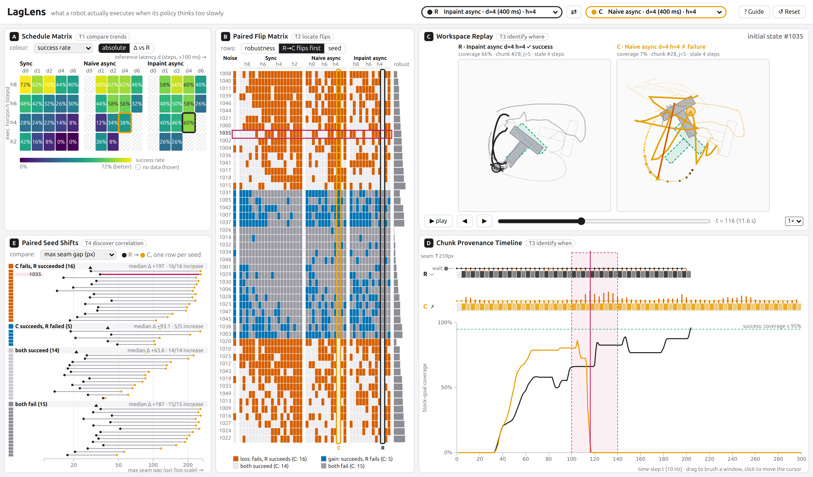
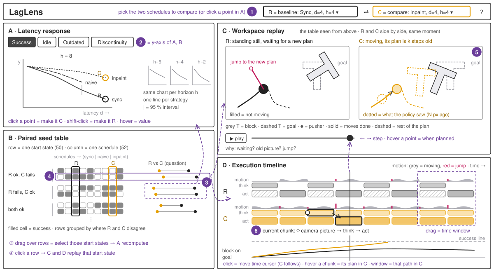
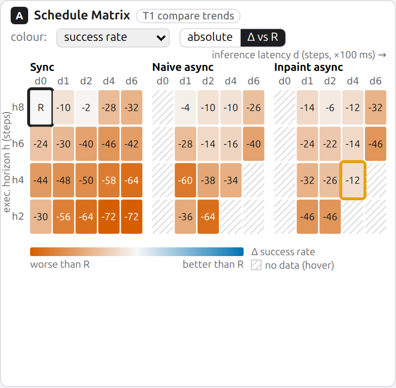
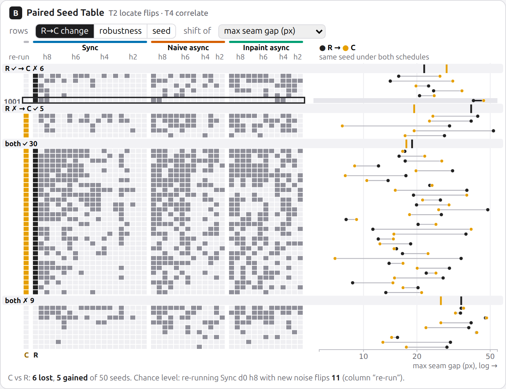
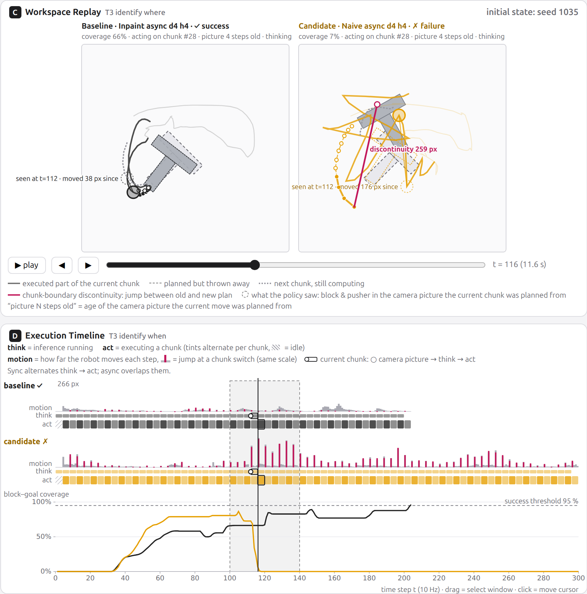
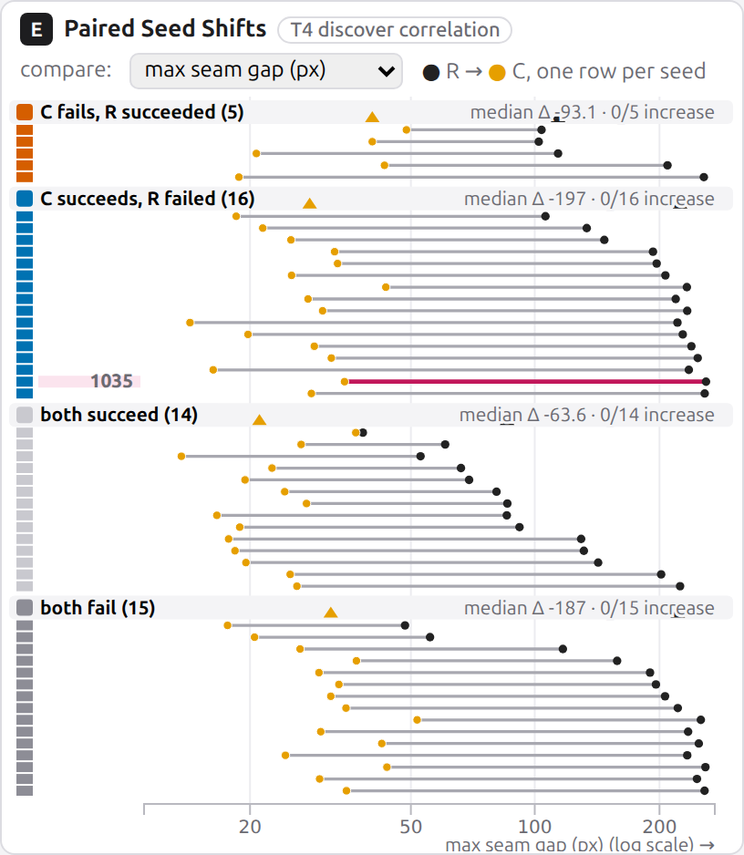

Source. We generated the data ourselves (no public dataset logs per-inference chunks). The pretrained lerobot/diffusion_pusht Diffusion Policy [2] (chunk length 16, 2 observation frames)
runs in the PushT simulator at 10 Hz (1 step = 100 ms) on CPU with a 10-step DDIM sampler. A schedule = strategy × latency d × execution horizon h:
sync (hold still for d steps, then execute h actions), naive async (keep executing the old chunk while inference runs, switch after d steps and skip the d outdated actions),
and inpaint async (as naive, but the new chunk is sampled with the committed actions clamped and the old plan softly blended in over the overlap; a training-free approximation of Real-Time Chunking [8]).
Async schedules with d = 0 equal sync d = 0, and d > h is infeasible (two inferences would overlap), giving 46 schedules. A replicate of sync d0 h8 with different sampling noise measures chance flips.
Dataset type: a multidimensional table of episodes ({{N_EP}} items × {{N_ATTR}} attributes, {{CSV_KB}} KB), each linked to two temporal tables, steps ({{N_STEPS}} items) and chunks ({{N_CHUNKS}} items, each with 16 predicted 2-D actions), and to a 2-D spatial field (512 × 512 px workspace); {{DETAIL_MB}} MB of JSON lazy-loaded per schedule. Keys: strategy, latency, horizon, replicate (→ schedule), seed (→ episode), t (→ step), chunk id (→ chunk). Everything else is a value.
| Attribute | Type, order | Levels / range | Meaning | Attribute | Type, order | Range | Meaning |
|---|---|---|---|---|---|---|---|
| strategy KEY | nominal | sync, naive, inpaint | chunk replacement rule | coverage_final | ratio ↑ | {{COV_RANGE}} | T-block/goal overlap |
| latency d KEY | ordinal (ratio) | 0<1<2<4<6 steps | inference delay | steps_to_success | ratio ↓ | {{STS_RANGE}} (null if failed) | time to finish |
| horizon h KEY | ordinal (ratio) | 2<4<6<8 steps | open-loop actions per chunk | seam_gap_mean / max | ratio (px) ↓ | {{SEAM_RANGE}} / {{SEAMMAX_RANGE}} | plan disagreement at hand-over |
| replicate KEY | nominal (binary) | 0, 1 | noise re-run | staleness_mean | ratio (steps) ↓ | {{STALE_RANGE}} | age of obs. behind actions |
| seed KEY | nominal | {{SEED_MIN}}–{{SEED_MAX}} (50) | paired initial state | idle_frac | ratio ↓ | {{IDLE_RANGE}} | share of steps without action |
| success | nominal (binary) | 0, 1 | coverage ≥ 95 % in 300 steps | jerk · path_len · n_inferences · n_seams · inner_step | ratio | {{JERK_RANGE}} · {{PATH_RANGE}} · {{NINF_RANGE}} · … | smoothness · effort · cost |
Derived metrics. Seam gap: at every hand-over from chunk k to k+1, the distance between the first action executed from k+1 and the action k had planned next. Staleness: steps between the observation a chunk was planned from and the execution of each of its actions. Step values: agent/block x, y (interval, px), block θ (cyclic), action x, y, chunk id, index j (0–15), age, held, coverage.
Goals/needs: choose strategy and horizon for a real arm whose GPU server is 60–250 ms away; explain why episodes fail, with per-episode evidence aligned with what the policy planned.
Pain points: only success tables and videos; cannot tell stale actions from seam jumps; real-robot reruns are expensive.
Goals/needs: set a latency budget and a default strategy for the async serving stack; know whether a drop is real or a few lucky seeds.
Pain points: papers report curves for other robots; no shared vocabulary with researchers. Difference: systems vs. policy expertise; aggregate (T1, T2) vs. episode-level (T3, T4) questions.
Portraits: public-domain StyleGAN images (Wikimedia Commons); the people do not exist.
| # | Action → target | Why | Expected outcome |
|---|---|---|---|
| T1 | Compare → trends of success / seam gap / staleness / idle across schedules | pick a schedule for the latency the lab actually has | robust region and a latency budget per strategy |
| T2 | Locate → outliers: initial states whose outcome flips between reference R and candidate C | aggregate rates hide which situations break; paired seeds isolate the schedule effect | a set of fragile seeds; flips separated from chance |
| T3 | Identify → features in time and space: where stale actions, seams and idling occur in a flipped episode | diagnose the failure mechanism, not just its rate | a causal hypothesis tied to specific chunks |
| T4 | Discover → correlation between seam gaps and task outcome over paired episodes | test the claim that failures come with larger chunk-boundary artifacts [12] | evidence for or against a strategy, per seed |

| View (task) | Idiom, marks & channels — why | Interaction |
|---|---|---|
| A Schedule Matrix (T1) | Small-multiple heatmaps: one panel per strategy (spatial region, best channel for the nominal key), latency × horizon on position (ordered keys). Cell luminance (viridis, brighter = better for every metric) or a diverging Δ-vs-R ramp; value labels restore precision. 46 cells in one glance; infeasible cells hatched with an explanation. | click = set C, shift-click = set R; change metric and absolute/Δ mode; tooltip with all aggregates and the noise-replicate value. |
| B Paired Flip Matrix (T2) | Seeds × schedules matrix; cell hue encodes the outcome relative to R (blue gain / vermillion loss; greys for no change). The noise column (replicate) shows the chance level. Marginal bar = seed robustness. 2,350 cells, pre-attentive flips. | sort rows (robustness / flips first / id); click cell = open episode with that schedule as C; hover = link highlight in E; dimmed by E's brush. |
| C Workspace Replay (T3) | Juxtaposed R | C maps at equal scale (true geometry for spatial data): goal, block pose at t, executed path, and the chunk fan: 16 planned points with luminance by index; solid = executed, dashed = discarded, dotted = chunk still being computed, grey = previous chunk's unused tail, vermillion segment = the last seam. | play / scrub / keyboard change t; hover a fan point = when it was planned and executed; click = jump; brushed window from D highlights the path. |
| D Chunk Provenance Timeline (T3) | Gantt lanes on a common time axis: dot–line = observation → chunk available (wait), bar = executed span (length), hatch = idle, tick length = seam gap; coverage lines (position) underneath with the 95 % success line. | brush a window (→ C), hover a chunk (→ its fan in C), click = cursor. |
| E Paired Seed Shifts (T4) | Dumbbell plot, one row per seed: ● R value → ● C value of one attribute on a common position axis (default max seam gap, log scale for the long tail). Rows are grouped by outcome change R→C (spatial region, colour swatches repeat B), sorted by shift; ▲ = group medians. No crossing lines, so “are failures associated with larger seams?” reads as the position of a group's dots. | brush rows or click a group = filter B; change attribute; click = open episode; hover = link. |
Colour is Okabe–Ito throughout (R near-black, C orange, gain blue, loss vermillion, goal green), so hue keeps one meaning across views; success is encoded by fill so that hue stays free for R vs. C. Sketch → implementation: the proposal's mid-fidelity sketch (below) was implemented as drawn, plus the noise-replicate column in B, which we added after seeing how often outcomes flip by chance. During design, E changed from a paired scatter (50 crossing segments on a two-valued coverage axis were hard to read) to the grouped dumbbell plot shown in the sketch.

src/): plain ES modules + d3.js v7.9.0 only (bundled, no other charting library). One shared state object with a d3.dispatch bus; each view re-renders only for the state keys it depends on. Per-schedule logs (≤ 5.3 MB) are fetched lazily and indexed once (executed index set per chunk), so scrubbing and hovering stay interactive. URL parameters reproduce any view state (used for every figure here).scripts/): generate_rollouts.py runs all seeds of a schedule in lockstep so that one batched diffusion call serves all 50 environments (CPU, ≈ 2–10 min per schedule); build_dataset.py derives metrics; verify_dataset.py checks the ≥ 100 items / ≥ 6 attributes requirement.ui_test.py loads the app in headless Chromium, runs {{N_UI_CHECKS}} interaction checks across all views, and fails on any console error (all pass, 0 errors). Two generator bugs found during analysis (an off-by-one inpainting mask and a dropped chunk when d = h) were fixed and the affected data regenerated.Mara's server adds ≈ 400 ms (d = 4). She opens LagLens with R = sync d0 h8, the policy's default.




Outcome. Mara proposes inpaint async with h = 4–8 for d ≈ 4, reports differences only beyond the 11-flip noise floor, and gives Arjun a latency budget: sync is acceptable only up to d = 2 at h = 8.
One simulated task and one policy; latency is quantised to 100 ms steps; the inpainting strategy is a training-free approximation of RTC; a 10-step DDIM sampler replaces the 100-step DDPM sampler for CPU feasibility (the replicate shows that this changes outcomes of individual seeds but not the 70–72 % baseline rate). With 50 seeds, success differences below ≈ 11 flips should not be interpreted.
This project was built with Claude Code (Anthropic, Claude Opus 5.5), directed and reviewed by the student. Written by AI: the literature survey and topic comparison, all data-generation and preprocessing scripts, the complete interface code in src/ (d3.js), the tests, the proposal slides and sketch, the personas, and this report's text, figures and screenshots (produced by operating the interface through scripted states). Human: topic choice among AI-proposed candidates, design requests (more and richer views), deployment approval, review. Numbers in the slides and this report are filled in automatically from the data files. External code, data and images are listed below and in docs/references.md; a dated log is in docs/ai_disclosure.md.
[1] Zhao et al. Learning Fine-Grained Bimanual Manipulation with Low-Cost Hardware (ACT). RSS 2023. arXiv:2304.13705
[2] Chi et al. Diffusion Policy: Visuomotor Policy Learning via Action Diffusion. RSS 2023. arXiv:2303.04137
[3] Black et al. π0: A Vision-Language-Action Flow Model. 2024. arXiv:2410.24164
[4] Pertsch et al. FAST: Efficient Action Tokenization for VLA Models. 2025. arXiv:2501.09747
[5] Kim, Finn, Liang. Fine-Tuning VLA Models: Optimizing Speed and Success. 2025. arXiv:2502.19645
[6] Shukor et al. SmolVLA (asynchronous inference). 2025. arXiv:2506.01844
[7] Liu et al. Bidirectional Decoding. ICLR 2025. arXiv:2408.17355
[8] Black, Galliker, Levine. Real-Time Execution of Action Chunking Flow Policies (RTC). NeurIPS 2025. arXiv:2506.07339
[9] Training-Time Action Conditioning for Efficient Real-Time Chunking. 2025. arXiv:2512.05964
[10] VLASH: Real-Time VLAs via Future-State-Aware Asynchronous Inference. 2025. arXiv:2512.01031
[11] SEAM: Smooth Execution of Action-Chunked Motion for VLA Policies. 2026. arXiv:2607.04609
[12] Noise-Space Attribution and Control of Chunk-Boundary Artifact. 2026. arXiv:2603.11642
[13] Lugmayr et al. RePaint. CVPR 2022 · Song et al. DDIM. ICLR 2021.
[14] Munzner. Visualization Analysis and Design. CRC, 2014 · Okabe & Ito colour palette · viridis.
[15] Related VIS: DQNViz (VAST 2018), DRLViz (EuroVis 2020), PolicyExplainer (arXiv:2104.02818).
Software: d3.js 7.9.0 (ISC) · LeRobot 0.6.1 and the lerobot/diffusion_pusht checkpoint (Apache-2.0) · gym-pusht (MIT) · PyTorch (BSD) · diffusers (Apache-2.0) · Playwright (Apache-2.0).